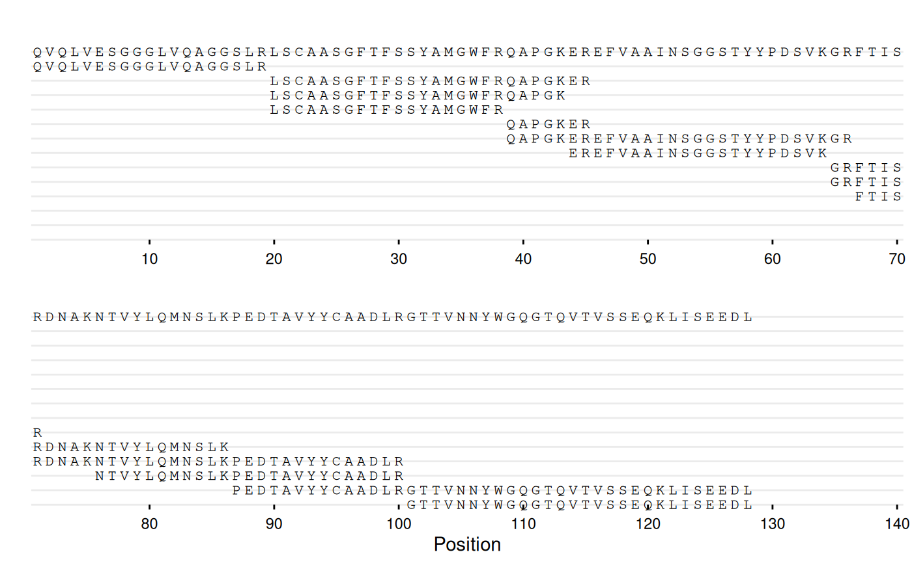
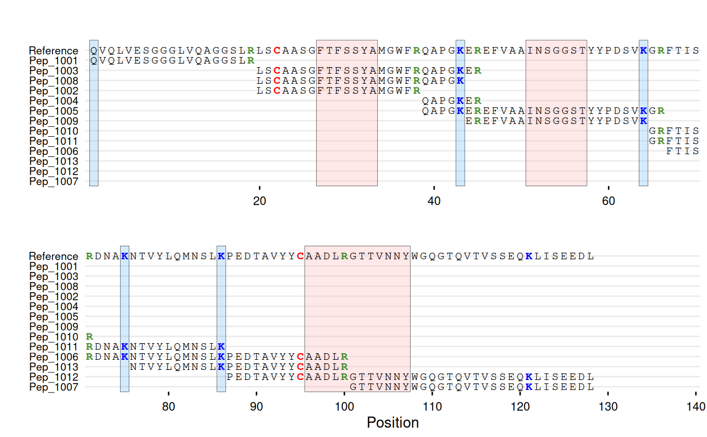
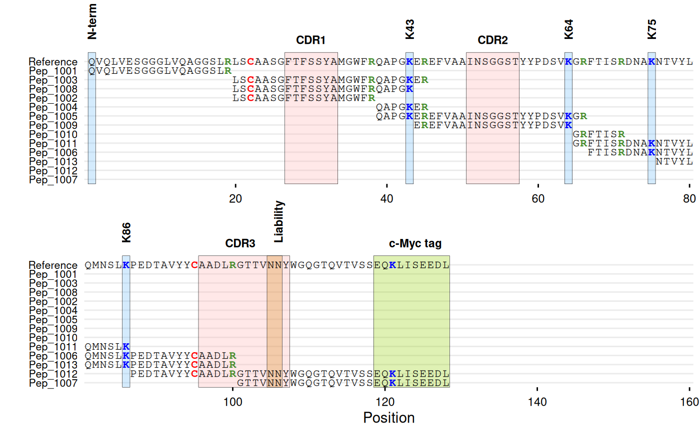

Plots sequences that are substrings of a reference sequence, with each unique sequence shown as a row at its aligned position. Useful for visualizing peptide mapping coverage, proteomics experiments, or any analysis where you need to show which parts of a reference sequence are covered by shorter sequences. Supports character coloring and region highlighting (e.g., CDRs, tags, binding sites).
Usage
gg_seq(
data,
ref,
sequence = "sequence",
name = NULL,
color = NULL,
highlight = NULL,
wrap = NULL,
size = 3,
face = "plain",
show_ref = TRUE,
margin_t = 30,
annotate = NULL,
annotate_defaults = list(angle = 0, vjust = 0.5, size = 3, face = "plain", color =
"black")
)Arguments
- data
A data frame containing sequences.
- ref
Character string of the reference sequence against which sequences will be aligned.
- sequence
Character string specifying the column name in
datathat contains the sequences. Default is "sequence".- name
Character string specifying the column name in
datathat contains names/IDs for the sequences. If NULL (default), no names are shown on the y-axis. If specified, these names will be displayed instead of blank labels. Note: If the same sequence appears multiple times indatawith different names, only the first occurrence's name will be used in the plot.- color
Named character vector of colors for specific characters, or NULL (default). If NULL, all characters are displayed in black. Characters specified here are automatically displayed in bold. Example:
c(K = "blue", R = "red").- highlight
Named list where names are valid R colors and values are numeric vectors of positions to highlight with vertical shading. The shading spans the full height of the plot with semi-transparent color (alpha = 0.3) and black borders. Consecutive positions are automatically merged into continuous bands. To specify multiple regions with the same color, provide them as a single vector:
list("#FFE0B2" = c(1:10, 50:60)). Default is NULL (no highlighting).- wrap
Numeric value specifying the maximum number of positions to display per row before wrapping to the next panel. If NULL (default), no wrapping is applied and the entire sequence is displayed in a single row. When specified, the plot is split into multiple vertically stacked panels, each showing up to
wrappositions. Useful for displaying long sequences in a more compact format.- size
Numeric value for the size of sequence characters. Default is 3.
- face
Character string specifying font face for characters. Must be one of "plain", "bold", "italic", or "bold.italic". Default is "plain". Note: Characters specified in
colorare always displayed in bold regardless of this setting.- show_ref
Logical indicating whether to show the reference sequence in the plot. Default is TRUE.
- margin_t
Numeric value for the top margin in points. Increases space above the plot to prevent annotation clipping. Adjust this value upward if rotated annotations are cut off. Default is 30.
- annotate
List of annotation specifications to add text labels above the plot. Each element must be a list with required elements
label(character string) andpos(numeric position). Optional elements:angle(rotation angle),hjust(horizontal justification, defaults to 0 for 90-degree angles and 0.5 for other angles),vjust(vertical justification),size(text size),face(font face),color(text color). Default is NULL (no annotations).- annotate_defaults
List of default values for annotation styling. Valid elements:
angle(default 0),vjust(default 0.5),size(default 3),face(default "plain"),color(default "black"). These defaults are used when individual annotations don't specify these parameters. Default islist(angle = 0, vjust = 0.5, size = 3, face = "plain", color = "black").
Value
A ggplot2 object showing the aligned sequences. The plot displays:
Character sequences aligned horizontally by their position in the reference
Each sequence on a separate row, ordered by starting position
Optional reference sequence at the top (if
show_ref = TRUE)Specified characters highlighted in bold with custom colors
Optional vertical shading bands at specified positions with black borders
Optional text annotations above the plot
If no sequences from data match the reference sequence, returns an empty
ggplot2 object with a warning message. Sequences that don't match the reference
are silently excluded from the plot without warning.
See also
gg_seqdiff for visualizing sequence differences relative
to a reference.
Examples
# Create synthetic example of peptide mapping data
# Reference sequence
ref_seq <- paste0(
"QVQLVESGGGLVQAGGSLRLSCAASGFTFSSYAMGWFRQAPGKEREFVAAINSGGST",
"YYPDSVKGRFTISRDNAKNTVYLQMNSLKPEDTAVYYCAADLRGTTVNNYWGQGTQV",
"TVSSEQKLISEEDL"
)
# Peptides with RT and intensity
df_peptides <- data.frame(
id = c("Pep_1004", "Pep_1010", "Pep_1007", "Pep_1011",
"Pep_1009", "Pep_1005", "Pep_1013", "Pep_1003",
"Pep_1001", "Pep_1012", "Pep_1006", "Pep_1008",
"Pep_1002"),
sequence = c(
"QAPGKER",
"GRFTISR",
"GTTVNNYWGQGTQVTVSSEQKLISEEDL",
"GRFTISRDNAKNTVYLQMNSLK",
"EREFVAAINSGGSTYYPDSVK",
"QAPGKEREFVAAINSGGSTYYPDSVKGR",
"NTVYLQMNSLKPEDTAVYYCAADLR",
"LSCAASGFTFSSYAMGWFRQAPGKER",
"QVQLVESGGGLVQAGGSLR",
"PEDTAVYYCAADLRGTTVNNYWGQGTQVTVSSEQKLISEEDL",
"FTISRDNAKNTVYLQMNSLKPEDTAVYYCAADLR",
"LSCAASGFTFSSYAMGWFRQAPGK",
"LSCAASGFTFSSYAMGWFR"
),
rt_min = c(10, 28.5, 34.4, 34.4, 36, 36.5, 40.8,
42.5, 42.8, 43.3, 44.1, 44.8, 46.7),
intensity = c(2769840, 2248170, 2172370, 1698280, 2202810,
983267, 659246, 1064906, 1988932, 1438544,
639990, 1017811, 1112824),
stringsAsFactors = FALSE
)
# Base coverage map
gg_seq(data = df_peptides, ref = ref_seq, wrap = 70)

# With peptide IDs and residue coloring
gg_seq(
data = df_peptides,
ref = ref_seq,
name = "id",
color = c(C = "red", K = "blue", R = "#468c2d"),
highlight = list(
"#ffb4b4" = c(27:33, 51:57, 96:107),
"#70bcfa" = c(1, 43, 64, 75, 86)
),
wrap = 70
)

# With annotations
gg_seq(
data = df_peptides,
ref = ref_seq,
name = "id",
color = c(C = "red", K = "blue", R = "#468c2d"),
highlight = list(
"#ffb4b4" = c(27:33, 51:57, 96:107), # CDR regions
"#70bcfa" = c(1, 43, 64, 75, 86), # Lysines
"#d68718" = c(105:106), # Liability site
"#94d104" = c(119:128) # c-Myc tag
),
annotate = list(
list(label = "CDR1", pos = 30),
list(label = "CDR2", pos = 54),
list(label = "CDR3", pos = 101),
list(label = "N-term", pos = 1, angle = 90, vjust = 1),
list(label = "K43", pos = 43, angle = 90),
list(label = "K64", pos = 64, angle = 90),
list(label = "K75", pos = 75, angle = 90),
list(label = "K86", pos = 86, angle = 90),
list(label = "Liability", pos = 106, angle = 90),
list(label = "c-Myc tag", pos = 124)
),
annotate_defaults = list(face = "bold"),
wrap = 80
)
